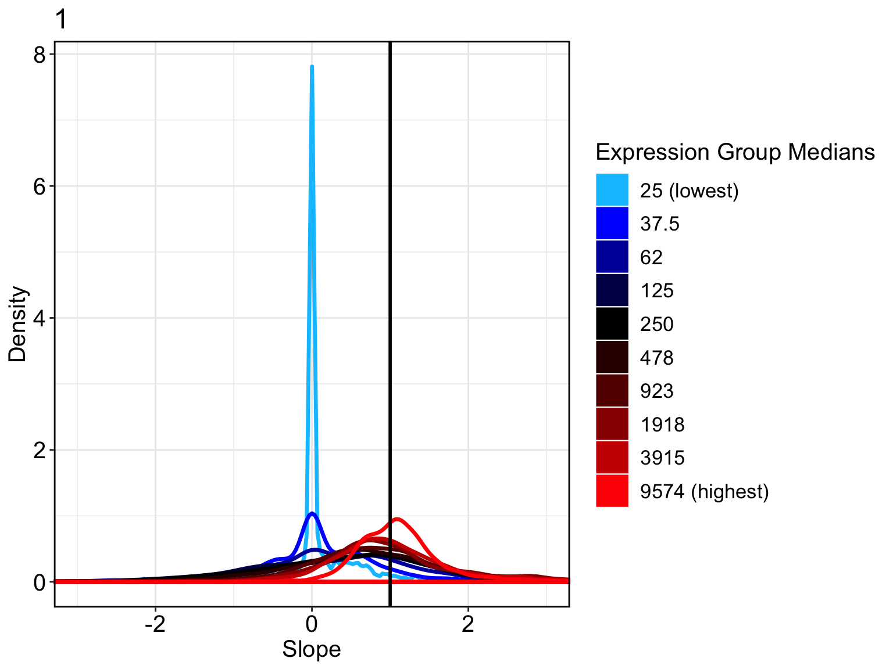
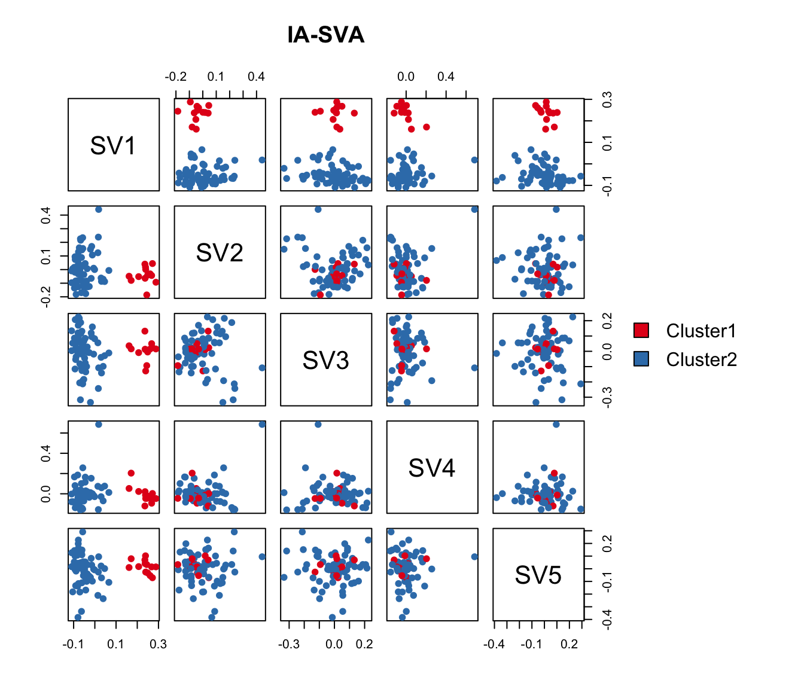
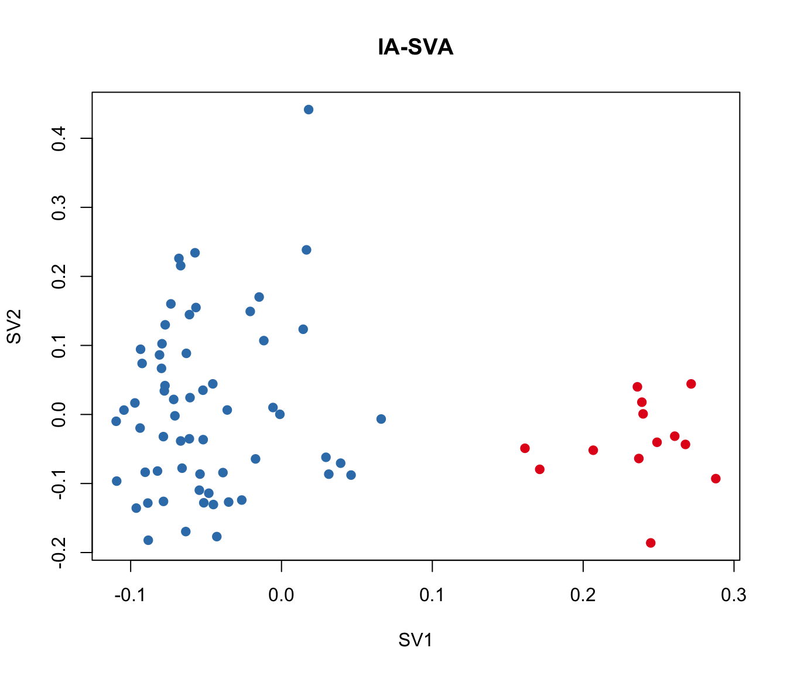
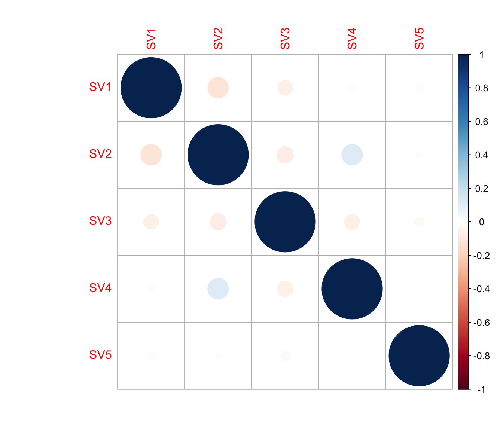
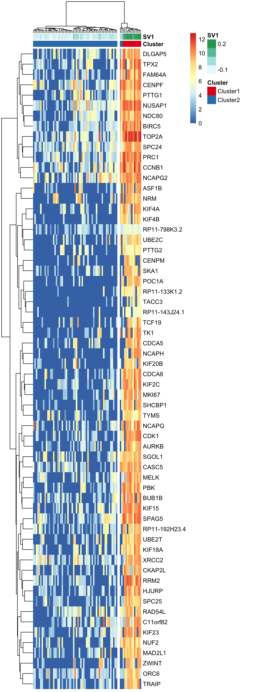
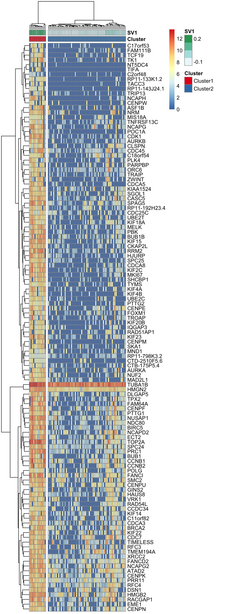
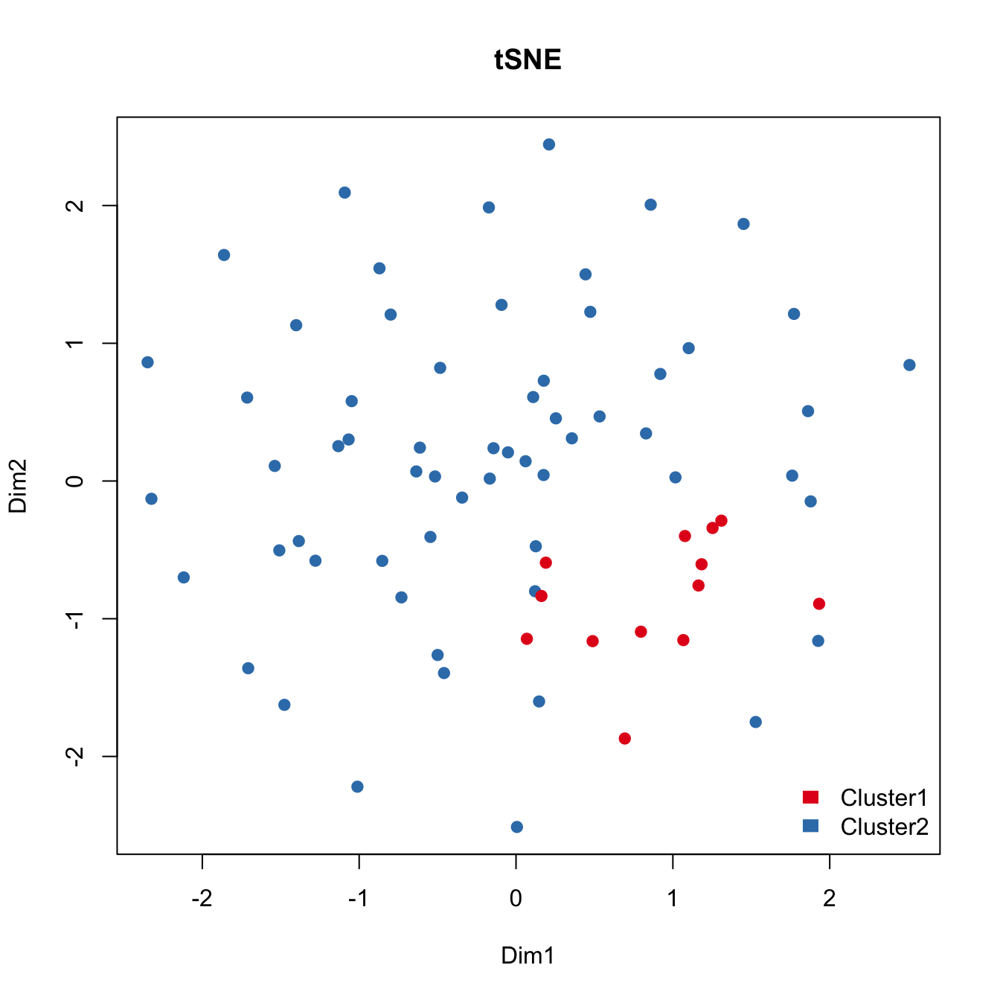
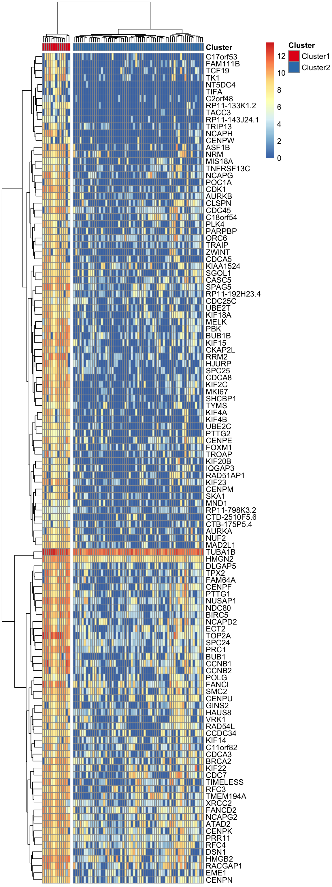

Detecting cell-cycle stage difference in glioblastoma cells
Donghyung Lee
2018-08-03
- Install packages
- Load packages
- Load the glioblastoma single cell RNA-Seq data
- Extract glioblastoma cells from Patient MGH30
- Normalization using SCnorm
- Calculate the number of detected genes
- Run IA-SVA
- Find marker genes for the detected heterogeneity (SV1).
- Cell type assignment using scran R package
- Run tSNE post IA-SVA analyses, i.e., run tSNE on marker genes associated with SV1 as detected by IA-SVA.
- Run principal component analysis (PCA) to detect the hidden heterogeneity (SV1).
- Run surrogate variable analysis (SVA) to detect the hidden heterogeneity (SV1).
- Correlation between SV1 and the geometric library size
- Session information
Last updated: 2018-08-03
workflowr checks: (Click a bullet for more information)-
✔ R Markdown file: up-to-date
Great! Since the R Markdown file has been committed to the Git repository, you know the exact version of the code that produced these results.
-
✔ Environment: empty
Great job! The global environment was empty. Objects defined in the global environment can affect the analysis in your R Markdown file in unknown ways. For reproduciblity it’s best to always run the code in an empty environment.
-
✔ Seed:
set.seed(20180731)The command
set.seed(20180731)was run prior to running the code in the R Markdown file. Setting a seed ensures that any results that rely on randomness, e.g. subsampling or permutations, are reproducible. -
✔ Session information: recorded
Great job! Recording the operating system, R version, and package versions is critical for reproducibility.
-
Great! You are using Git for version control. Tracking code development and connecting the code version to the results is critical for reproducibility. The version displayed above was the version of the Git repository at the time these results were generated.✔ Repository version: 2689835
Note that you need to be careful to ensure that all relevant files for the analysis have been committed to Git prior to generating the results (you can usewflow_publishorwflow_git_commit). workflowr only checks the R Markdown file, but you know if there are other scripts or data files that it depends on. Below is the status of the Git repository when the results were generated:
Note that any generated files, e.g. HTML, png, CSS, etc., are not included in this status report because it is ok for generated content to have uncommitted changes.Ignored files: Ignored: .DS_Store Ignored: .Rhistory Ignored: .Rproj.user/ Ignored: data/.DS_Store Ignored: inst/.DS_Store Ignored: inst/doc/.DS_Store Ignored: vignettes/.DS_Store Untracked files: Untracked: analysis/figure/ Untracked: output/CC_genes.long.txt Untracked: output/CC_genes.short.txt Untracked: output/Clustering_analyses_figure3_sv1.pdf Untracked: output/Patel_Glioblastoma_MGH30_CellCycle_Figure3ABCD.pdf Untracked: output/Patel_Glioblastoma_MGH30_Cellcycle_SV1_Genes_rsqcutoff0.3.txt Untracked: output/Patel_Glioblastoma_MGH30_Cellcycle_SV1_Genes_rsqcutoff0.4.txt Untracked: output/Patel_Glioblastoma_MGH30_iasva_SV1_genes_rsqcutoff0.3_pheatmap_iasvaV0.95_Figure3F.pdf
Expand here to see past versions:
Here, we illustrate how to use the iasva package to detect cell cycle stage difference within single cell RNA sequencing data. We use single cell RNA sequencing (scRNA-Seq) data obtained from human glioblastoma samples (Petel et. al., 2014). This dataset is included in a R data package (“iasvaExamples”) containing data examples for IA-SVA (https://github.com/dleelab/iasvaExamples). To install the package, follow the instruction provided in the GitHub page.
Install packages
#devtools
library(devtools)
#iasva
devtools::install_github("UcarLab/iasva")
#iasvaExamples
devtools::install_github("dleelab/iasvaExamples")Load packages
rm(list=ls())
library(irlba) # partial SVD, the augmented implicitly restarted Lanczos bidiagonalization algorithm
library(iasva)
library(iasvaExamples)
library(sva)
library(SCnorm)Warning: package 'SCnorm' was built under R version 3.5.1library(scran)
library(scater)Warning: package 'scater' was built under R version 3.5.1library(Rtsne)
library(pheatmap)
library(corrplot)
library(DescTools) #pcc i.e., Pearson's contingency coefficient
library(RColorBrewer)
library(SummarizedExperiment)
library(vioplot)
color.vec <- brewer.pal(3, "Set1")
# Normalization.
normalize <- function(counts)
{
normfactor <- colSums(counts)
return(t(t(counts)/normfactor)*median(normfactor))
}Load the glioblastoma single cell RNA-Seq data
data("Patel_Glioblastoma_scRNAseq_Read_Counts")
data("Patel_Glioblastoma_scRNAseq_Annotations")
data("Patel_Glioblastoma_scRNAseq_ENSG_ID")
ls()[1] "color.vec"
[2] "normalize"
[3] "Patel_Glioblastoma_scRNAseq_Annotations"
[4] "Patel_Glioblastoma_scRNAseq_ENSG_ID"
[5] "Patel_Glioblastoma_scRNAseq_Read_Counts"counts <- Patel_Glioblastoma_scRNAseq_Read_Counts
anns <- Patel_Glioblastoma_scRNAseq_Annotations
ENSG.ID <- Patel_Glioblastoma_scRNAseq_ENSG_ID
dim(anns)[1] 434 3dim(counts)[1] 25353 434length(ENSG.ID)[1] 25353summary(anns) run patient_id subtype
SRR1294493: 1 MGH26:118 None :120
SRR1294494: 1 MGH28: 95 Mes :103
SRR1294496: 1 MGH29: 76 Pro : 89
SRR1294498: 1 MGH30: 74 Cla : 46
SRR1294499: 1 MGH31: 71 Neu : 24
SRR1294500: 1 Pro+Cla: 20
(Other) :428 (Other): 32 table(anns$patient_id, anns$subtype)
Cla Cla+Mes Mes Neu Neu+Cla Neu+Mes None Pro Pro+Cla Pro+Neu
MGH26 10 0 0 1 1 0 19 71 14 2
MGH28 1 5 56 0 0 7 21 5 0 0
MGH29 0 0 28 12 0 12 19 4 0 1
MGH30 33 1 8 1 1 0 16 6 6 2
MGH31 2 0 11 10 0 0 45 3 0 0ContCoef(table(anns$patient_id, anns$subtype))[1] 0.723431The annotations describing the glioblastoma samples and experimental settings are stored in “anns” and the read counts information is stored in “counts”.
Extract glioblastoma cells from Patient MGH30
We use read counts of glioblastoma cells from Patient MGH30 (n = 74).
counts <- counts[, (anns$patient_id=="MGH30")]
anns <- subset(anns, (patient_id=="MGH30"))
dim(counts)[1] 25353 74
dim(anns)[1] 74 3
anns <- droplevels(anns)
prop.zeros <- sum(counts==0)/length(counts)
prop.zeros[1] 0.6290769
# filter out genes that are sparsely and lowly expressed
filter = apply(counts, 1, function(x) length(x[x>5])>=3)
counts = counts[filter,]
dim(counts)[1] 21907 74
ENSG.ID <- ENSG.ID[filter]
length(ENSG.ID)[1] 21907
prop.zeros <- sum(counts==0)/length(counts)
prop.zeros[1] 0.5731686
Subtype <- anns$subtype
Patient_ID <- anns$patient_id
mito.genes <- grep(pattern = "^MT-", x = rownames(x = counts), value = TRUE)
Percent_Mito <- colSums(counts[mito.genes, ])/colSums(counts)Normalization using SCnorm
## count-depth relationship for all genes
Conditions = rep(c(1), each=74)
countDeptEst <- plotCountDepth(Data = counts, Conditions = Conditions,
FilterCellProportion = .1, NCores=8)
DataNorm <- SCnorm(Data = counts, Conditions = Conditions,
PrintProgressPlots = FALSE,
FilterCellNum = 10,
NCores=8)Setting up parallel computation using 8 coresGene filter is applied within each condition.5275 genes in condition 1 will not be included in the normalization due to
the specified filter criteria.A list of these genes can be accessed in output,
see vignette for example.Finding K for Condition 1Trying K = 1Trying K = 2Trying K = 3Trying K = 4Trying K = 5Trying K = 6Trying K = 7Done!counts <- SingleCellExperiment::normcounts(DataNorm)
summary(colSums(counts)) Min. 1st Qu. Median Mean 3rd Qu. Max.
54112972 56272666 56519431 58933473 57764297 116031129 dim(counts)[1] 21907 74Calculate the number of detected genes
It is well known that the number of detected genes in each cell explains a very large portion of variability in scRNA-Seq data (Hicks et. al. 2015 BioRxiv, McDavid et. al. 2016 Nature Biotechnology). Frequently, the first principal component of log-transformed scRNA-Seq read counts is highly correlated with the number of detected genes (e.g., r > 0.9). Here, we calculate the number of detected genes for glioblastoma cells, which will be used as an known factor in the IA-SVA analyses.
Num_Detected_Genes <- colSums(counts>0)
Geo_Lib <- colSums(log(counts+1))
summary(Geo_Lib) Min. 1st Qu. Median Mean 3rd Qu. Max.
48594 55663 60062 60197 62882 99461 barplot(Geo_Lib, xlab="Cell", las=2, ylab = "Geometric library size")
lcounts <- log(counts + 1)
# PC1 and Geometric library size correlation
pc1 = irlba(lcounts - rowMeans(lcounts), 1)$v[,1] ## partial SVD
cor(Num_Detected_Genes, pc1)[1] 0.8357149cor(Geo_Lib, pc1)[1] 0.9299861Run IA-SVA
Here, we run IA-SVA using Geo_Lib_Size as a known factor and identify five hidden factors. SVs are plotted in a pairwise fashion to uncover which SVs can seperate cells.
set.seed(3445)
mod <- model.matrix(~Geo_Lib)
summ_exp <- SummarizedExperiment(assays = counts)
iasva.res<- iasva(summ_exp, as.matrix(mod[,-1]),verbose=FALSE, permute=FALSE, num.sv=5)IA-SVA running...
SV 1 Detected!
SV 2 Detected!
SV 3 Detected!
SV 4 Detected!
SV 5 Detected!
# of significant surrogate variables: 5iasva.sv <- iasva.res$sv
Cluster <- as.factor(iasva.sv[,1] < 0.1)
levels(Cluster)=c("Cluster1","Cluster2")
table(Cluster)Cluster
Cluster1 Cluster2
13 61 pairs(iasva.sv[,1:5], main="IA-SVA", pch=21, col=color.vec[Cluster],
bg=color.vec[Cluster], oma=c(4,4,6,14))
legend("right", levels(Cluster), fill=color.vec, bty="n")
plot(iasva.sv[,1:2], main="IA-SVA", pch=21, xlab="SV1", ylab="SV2",
col=color.vec[Cluster], bg=color.vec[Cluster])
cor(Num_Detected_Genes, iasva.sv[,1])[1] 0.3477167cor(Geo_Lib, iasva.sv[,1])[1] 0.4360903corrplot(cor(iasva.sv))
Find marker genes for the detected heterogeneity (SV1).
Here, using the find_markers() function we find marker genes that are significantly associated with SV1 (multiple testing adjusted p-value < 0.05, default significance cutoff, and R-squared value > 0.3).
# try different R2 thresholds
pdf(paste0("output/Clustering_analyses_figure3_sv1.pdf"))
r2.results <- study_R2(summ_exp, iasva.sv,selected.svs=1, no.clusters=2)# of markers (): 466total # of unique markers: 466# of markers (): 361total # of unique markers: 361# of markers (): 232total # of unique markers: 232# of markers (): 165total # of unique markers: 165# of markers (): 119total # of unique markers: 119# of markers (): 89total # of unique markers: 89# of markers (): 62total # of unique markers: 62# of markers (): 47total # of unique markers: 47# of markers (): 33total # of unique markers: 33# of markers (): 21total # of unique markers: 21# of markers (): 14total # of unique markers: 14# of markers (): 5total # of unique markers: 5# of markers (): 1total # of unique markers: 1# of markers (): 0total # of unique markers: 0dev.off()quartz_off_screen
2 marker.counts.SV1 <- find_markers(summ_exp,
as.matrix(iasva.sv[,c(1)]), rsq.cutoff = 0.4)# of markers (): 62total # of unique markers: 62marker.counts.SV1.long <- find_markers(summ_exp,
as.matrix(iasva.sv[,c(1)]), rsq.cutoff = 0.3)# of markers (): 119total # of unique markers: 119nrow(marker.counts.SV1) [1] 62nrow(marker.counts.SV1.long)[1] 119anno.col2 <- data.frame(Cluster=Cluster, SV1=iasva.sv[,1])
rownames(anno.col2) <- colnames(marker.counts.SV1)
head(anno.col2) Cluster SV1
SRR1294928 Cluster2 0.03921618
SRR1294930 Cluster2 -0.08861064
SRR1294931 Cluster2 -0.06308121
SRR1294932 Cluster2 -0.07956245
SRR1294934 Cluster2 0.01656383
SRR1294935 Cluster2 -0.04288853cluster.col <- color.vec[1:2]
names(cluster.col) <- as.vector(levels(Cluster))
anno.colors <- list(Cluster=cluster.col)
anno.colors$Cluster
Cluster1 Cluster2
"#E41A1C" "#377EB8" pheatmap(log(marker.counts.SV1+1), show_colnames =FALSE,
clustering_method = "ward.D2",cutree_cols = 2,annotation_col = anno.col2,
annotation_colors = anno.colors)
pheatmap(log(marker.counts.SV1.long+1), show_colnames =FALSE,
clustering_method = "ward.D2",cutree_cols = 2,annotation_col = anno.col2,
annotation_colors = anno.colors)
gene.list <- rownames(marker.counts.SV1)
write.table(gene.list, file = paste0("output/CC_genes.short.txt"),
col.names =F, row.names = F, quote = F)
gene.list <- rownames(marker.counts.SV1.long)
write.table(gene.list, file = paste0("output/CC_genes.long.txt"),
col.names =F, row.names = F, quote = F)Theses marker genes are strongly enriched in cell-cycle related GO terms and KEGG pathways. (See Supplementary Figure 6 in https://doi.org/10.1101/151217)
Cell type assignment using scran R package
ENSG.counts <- counts
rownames(ENSG.counts) <- ENSG.ID
sce <- SingleCellExperiment(list(counts=ENSG.counts))
# load human cell cycle markers
hs.pairs <- readRDS(system.file("exdata",
"human_cycle_markers.rds", package="scran"))
assigned <- cyclone(sce, pairs=hs.pairs)
head(assigned$scores) G1 S G2M
1 0.432 0.983 0.001
2 0.103 0.926 0.027
3 0.105 0.895 0.009
4 0.032 0.950 0.024
5 0.003 0.692 0.560
6 0.452 0.905 0.000table(assigned$phases)
G1 G2M S
8 14 52 phase <- rep("S", ncol(sce))
phase[assigned$scores$G1 > 0.5 & assigned$scores$G2M < 0.5] <- "G1"
phase[assigned$scores$G1 < 0.5 & assigned$scores$G2M > 0.5] <- "G2M"
phase[assigned$scores$G1 < 0.5 & assigned$scores$G2M < 0.5] <- "S"
phase[assigned$scores$G1 > 0.5 & assigned$scores$G2M > 0.5] <- "Unknown"
table(phase)phase
G1 G2M S Unknown
7 12 52 3 G1 <- iasva.sv[,1][phase=="G1"]
S <- iasva.sv[,1][phase=="S"]
G2M <- iasva.sv[,1][phase=="G2M"]
Unknown <- iasva.sv[,1][phase=="Unknown"]
vioplot(G1, S, G2M, Unknown, names=c("G1", "S", "G2M", "Unknown"),
col="gold")
title(xlab="Cell-cycle stage predictions", ylab="IA-SVA factor (SV1)") ## Run tSNE to detect the hidden heterogeneity. For comparison purposes, we applied tSNE on read counts of all genes to identify the hidden heterogeneity. We used the Rtsne R package with default settings.
## Run tSNE to detect the hidden heterogeneity. For comparison purposes, we applied tSNE on read counts of all genes to identify the hidden heterogeneity. We used the Rtsne R package with default settings.
set.seed(43324)
tsne.res <- Rtsne(t(lcounts), dims = 2, perplexity = 20)
plot(tsne.res$Y, main="tSNE", xlab="Dim1", ylab="Dim2",
pch=21, col=color.vec[Cluster], bg=color.vec[Cluster], oma=c(4,4,6,12))
legend("bottomright", levels(Cluster), border="white",
fill=color.vec, bty="n")
As shown above, tSNE fails to detect the outlier cells that are identified by IA-SVA when all genes are used. Same color coding is used as above.
Run tSNE post IA-SVA analyses, i.e., run tSNE on marker genes associated with SV1 as detected by IA-SVA.
Here, we apply tSNE on the marker genes for SV1 obtained from IA-SVA
set.seed(3452)
tsne.res <- Rtsne(unique(t(log(marker.counts.SV1.long+1))),
dims = 2, perplexity = 20)
plot(tsne.res$Y, main="IA-SVA + tSNE", xlab="tSNE Dim1",
ylab="tSNE Dim2", pch=21, col=color.vec[Cluster],
bg=color.vec[Cluster], oma=c(4,4,6,12))
legend("topright", levels(Cluster), border="white", fill=color.vec, bty="n")
Correlation between SV1 and the geometric library size
cor(Num_Detected_Genes, iasva.sv[,1])[1] 0.3477167cor(Geo_Lib, iasva.sv[,1])[1] 0.4360903By allowing correlation between factors, IA-SVA accurately detects the cell cycle stage difference, which is moderately correlated (|r|=0.44) with the geometric library size (the first principal component). Existing methods fail to detect the heterogeneity due to the orthogonality assumption.
pdf(file=paste0("output/Patel_Glioblastoma_MGH30_CellCycle_Figure3ABCD.pdf"), width=5, height=8)
layout(matrix(c(1,2,3,4,5,5), nrow=3, ncol=2, byrow=TRUE))
plot(iasva.sv[,1:2], main="IA-SVA", pch=21, xlab="SV1", ylab="SV2",
col=color.vec[Cluster], bg=color.vec[Cluster], oma=c(4,4,6,12))
legend("topright", levels(Cluster), border="white", fill=color.vec, bty="n")
plot(pca.res[,1:2], main="PCA", pch=21, xlab="PC1",
ylab="PC2", col=color.vec[Cluster], bg=color.vec[Cluster])
plot(sva.res[,1:2], main="USVA", xlab="SV1", ylab="SV2",
pch=21, col=color.vec[Cluster], bg=color.vec[Cluster])
plot(tsne.res$Y, main="tSNE", xlab="Dimension 1",
ylab="Dimension 2", pch=21, col=color.vec[Cluster], bg=color.vec[Cluster])
vioplot(G1, S, G2M, Unknown, names=c("G1", "S", "G2M", "Unknown"),
col="gold")
title(xlab="Cell-cycle stage predictions", ylab="IA-SVA factor")
dev.off()quartz_off_screen
2 anno.col2 <- data.frame(Cluster=Cluster)
rownames(anno.col2) <- colnames(marker.counts.SV1)
head(anno.col2) Cluster
SRR1294928 Cluster2
SRR1294930 Cluster2
SRR1294931 Cluster2
SRR1294932 Cluster2
SRR1294934 Cluster2
SRR1294935 Cluster2cluster.col <- color.vec[1:2]
names(cluster.col) <- as.vector(levels(Cluster))
anno.colors <- list(Cluster=cluster.col)
anno.colors$Cluster
Cluster1 Cluster2
"#E41A1C" "#377EB8" pheatmap(log(marker.counts.SV1.long+1), show_colnames =FALSE,
clustering_method = "ward.D2",cutree_cols = 2,annotation_col = anno.col2,
annotation_colors = anno.colors)
pheatmap(log(marker.counts.SV1.long+1), show_colnames =FALSE,
clustering_method = "ward.D2",cutree_cols = 2,annotation_col = anno.col2,
annotation_colors = anno.colors,
filename=paste0("output/Patel_Glioblastoma_MGH30_iasva_SV1_genes_rsqcutoff0.3_pheatmap_iasvaV0.95_Figure3F.pdf"),
width=6, height=16)write.table(as.data.frame(rownames(marker.counts.SV1)),
file=paste0("output/Patel_Glioblastoma_MGH30_Cellcycle_SV1_Genes_rsqcutoff0.4.txt"),
quote=F, row.names=F, col.names=F, sep=" ")
write.table(as.data.frame(rownames(marker.counts.SV1.long)),
file=paste0("output/Patel_Glioblastoma_MGH30_Cellcycle_SV1_Genes_rsqcutoff0.3.txt"),
quote=F, row.names=F, col.names=F, sep=" ")Session information
sessionInfo()R version 3.5.0 (2018-04-23)
Platform: x86_64-apple-darwin15.6.0 (64-bit)
Running under: macOS Sierra 10.12.6
Matrix products: default
BLAS: /Library/Frameworks/R.framework/Versions/3.5/Resources/lib/libRblas.0.dylib
LAPACK: /Library/Frameworks/R.framework/Versions/3.5/Resources/lib/libRlapack.dylib
locale:
[1] en_US.UTF-8/en_US.UTF-8/en_US.UTF-8/C/en_US.UTF-8/en_US.UTF-8
attached base packages:
[1] parallel stats4 stats graphics grDevices utils datasets
[8] methods base
other attached packages:
[1] vioplot_0.2 sm_2.2-5.4
[3] RColorBrewer_1.1-2 DescTools_0.99.24
[5] corrplot_0.84 pheatmap_1.0.10
[7] Rtsne_0.13 scater_1.8.2
[9] ggplot2_2.2.1.9000 scran_1.8.2
[11] SingleCellExperiment_1.2.0 SummarizedExperiment_1.10.1
[13] DelayedArray_0.6.1 matrixStats_0.53.1
[15] Biobase_2.40.0 GenomicRanges_1.32.3
[17] GenomeInfoDb_1.16.0 IRanges_2.14.10
[19] S4Vectors_0.18.3 BiocGenerics_0.26.0
[21] SCnorm_1.2.1 sva_3.28.0
[23] BiocParallel_1.14.2 genefilter_1.62.0
[25] mgcv_1.8-23 nlme_3.1-137
[27] iasvaExamples_1.0.0 iasva_0.99.3
[29] irlba_2.3.2 Matrix_1.2-14
[31] workflowr_1.0.1 rmarkdown_1.9
loaded via a namespace (and not attached):
[1] ggbeeswarm_0.6.0 colorspace_1.3-2
[3] rjson_0.2.19 dynamicTreeCut_1.63-1
[5] rprojroot_1.3-2 XVector_0.20.0
[7] MatrixModels_0.4-1 DT_0.4
[9] bit64_0.9-7 manipulate_1.0.1
[11] mvtnorm_1.0-8 AnnotationDbi_1.42.1
[13] splines_3.5.0 R.methodsS3_1.7.1
[15] tximport_1.8.0 knitr_1.20
[17] annotate_1.58.0 cluster_2.0.7-1
[19] R.oo_1.22.0 shinydashboard_0.7.0
[21] shiny_1.1.0 compiler_3.5.0
[23] backports_1.1.2 assertthat_0.2.0
[25] lazyeval_0.2.1 limma_3.36.2
[27] later_0.7.2 htmltools_0.3.6
[29] quantreg_5.36 tools_3.5.0
[31] bindrcpp_0.2.2 igraph_1.2.1
[33] gtable_0.2.0 glue_1.2.0
[35] GenomeInfoDbData_1.1.0 reshape2_1.4.3
[37] dplyr_0.7.5 Rcpp_0.12.17
[39] DelayedMatrixStats_1.2.0 stringr_1.3.1
[41] mime_0.5 statmod_1.4.30
[43] XML_3.98-1.11 edgeR_3.22.3
[45] MASS_7.3-50 zlibbioc_1.26.0
[47] scales_0.5.0 promises_1.0.1
[49] expm_0.999-2 rhdf5_2.24.0
[51] SparseM_1.77 yaml_2.1.19
[53] memoise_1.1.0 gridExtra_2.3
[55] stringi_1.2.2 RSQLite_2.1.1
[57] boot_1.3-20 rlang_0.2.1
[59] pkgconfig_2.0.1 moments_0.14
[61] bitops_1.0-6 evaluate_0.10.1
[63] lattice_0.20-35 purrr_0.2.5
[65] Rhdf5lib_1.2.1 bindr_0.1.1
[67] labeling_0.3 htmlwidgets_1.2
[69] bit_1.1-14 tidyselect_0.2.4
[71] plyr_1.8.4 magrittr_1.5
[73] R6_2.2.2 DBI_1.0.0
[75] foreign_0.8-70 pillar_1.2.3
[77] whisker_0.3-2 withr_2.1.2
[79] survival_2.42-3 RCurl_1.95-4.10
[81] tibble_1.4.2 viridis_0.5.1
[83] locfit_1.5-9.1 grid_3.5.0
[85] data.table_1.11.4 blob_1.1.1
[87] FNN_1.1 git2r_0.21.0
[89] digest_0.6.15 xtable_1.8-2
[91] httpuv_1.4.3 R.utils_2.6.0
[93] munsell_0.4.3 beeswarm_0.2.3
[95] viridisLite_0.3.0 vipor_0.4.5 This reproducible R Markdown analysis was created with workflowr 1.0.1